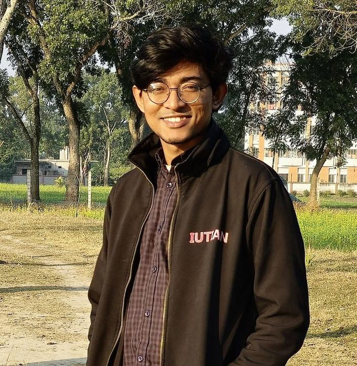

Md. Tariquzzaman

Junior Lecturer · Computer Science & Engineering
Islamic University of Technology
Gazipur, Bangladesh · M.Sc. in progress
I am a Junior Lecturer in Computer Science and Engineering at the Islamic University of Technology. My research focuses on misinformation & harmful content, LLM evaluation & bias, low-resource & Bangla NLP, and accessibility & sign language.
I am a member of the Systems and Software Lab.
Research interests
Explore my research01
Misinformation & harmful content
Detecting violence-inciting text and financial misinformation across languages and platforms.
02LLM evaluation & bias
Benchmarks that surface how model judgments shift with persona, region, and identity.
03Low-resource & Bangla NLP
Embeddings, augmentation, and modeling for informal Bangla, where clean labelled data is scarce.
04Accessibility & sign language
Sign language instruction generation for learners of low-resource sign languages.
Recent
All publications- Mar 2026
- Same Claim, Different Judgment accepted to Findings of ACL 2026.
- Oct 2025
- Prompting with Sign Parameters accepted at the CV4A11y workshop at ICCV 2025.
- Dec 2024
- BDA: Bangla Text Data Augmentation Framework released on arXiv.
- Sep 2024
- Joined IUT as a Junior Lecturer in CSE and started my M.Sc. in CSE.
- Jun 2024
- Completed my B.Sc. in CSE at IUT.
- Dec 2023
- A Novel Informal Bangla FastText Embedding received the Best Shared Task Paper Award at BLP @ EMNLP 2023.